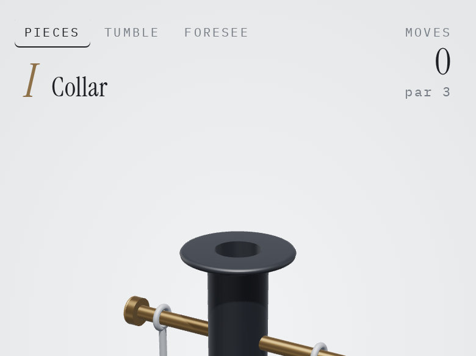

Builds
10 builds · updated Nov 7
Things I make with AI agents, from daily experiments to tools I use every day.
All
Learning
Series
Data
Games
Audio
Featured
Settlers
The classic island trading game against 1 to 3 bots, on a 3D board.
Pinball
Six themed pinball tables, played in the browser.
Mastery Field Guide
A curated study encyclopedia with spaced-repetition flashcards.
4th Down
Go, punt or kick? Fourth-down calls by win probability.
Data Analytics Portfolio
A synthetic health warehouse, analyzed end to end.
Latest
Ludo
Ludo for friends, with bots to fill empty seats.
Data Analytics Portfolio
A synthetic health warehouse, analyzed end to end.
Project Index
Sprint build, Nov 4
Sound Jam Band
A generative jam band in one page: pick a genre and listen.
4th Down
Go, punt or kick? Fourth-down calls by win probability.

Spatial Puzzles
Spatial puzzles on a rolling cube: plan ahead or tumble through.
Pinball
Six themed pinball tables, played in the browser.
All
Mastery Field Guide
A curated study encyclopedia with spaced-repetition flashcards.
November Sprint
One new build a day, frozen as it was finished.
Project Index
Sprint build, Nov 4
4th Down
Go, punt or kick? Fourth-down calls by win probability.
Data Analytics Portfolio
A synthetic health warehouse, analyzed end to end.
Ludo
Ludo for friends, with bots to fill empty seats.
Pinball
Six themed pinball tables, played in the browser.
Settlers
The classic island trading game against 1 to 3 bots, on a 3D board.
Spatial Puzzles
Spatial puzzles on a rolling cube: plan ahead or tumble through.
Sound Jam Band
A generative jam band in one page: pick a genre and listen.
Open
Code
Close